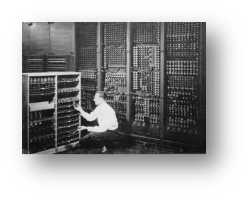
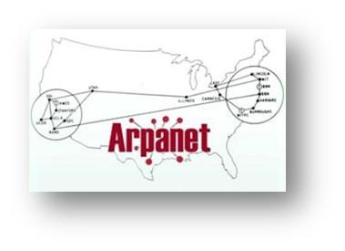

| 1946 | Primera computadora electronica ENIAC fue el primer ordenador de propósito general diseñado en la Universidad de Pensilvania |
 |
| 1969 | Creación de ARPANET Siendo el precursor de internet,diseñada con una arquitectura altamente distribuida |
|
| 1970 | Comienza la era de los negocios Computadoras para inventarios y nominas de contabilidad, sin embargo eran muy caras |
|
| 1973 | Conexión con ARPANET
Primera conexión internacional a ARPANET |
 |